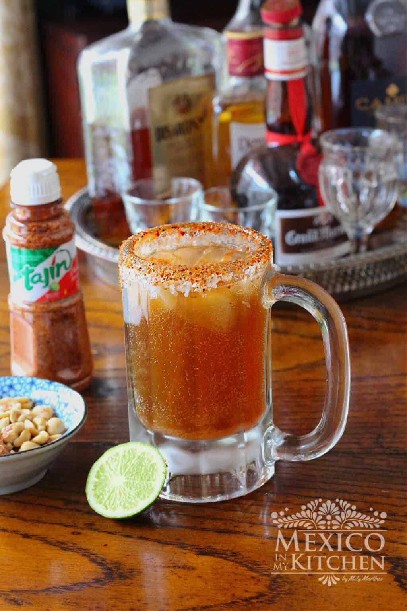

Michelada Cocktail
Home
Milanesa
Tetelas
Michelada

Description
Michelada is a Mexican Beer Cocktail featuring beer, ice, lime juice, salt, and an assortment of sauces. These typically include Worcestershire sauce, a hot sauce (like Tabasco, Valentina, or Tapatio), and a seasoning sauce (like Maggi).
Ingredients
- 4 Lime wedges one to moisten the rim and one to decorate the glass
- Salt (enough to coat the rim of the glass)
- 2 tsp. Tajin Powder (or finely crushed Piquin Pepper
- 1 cup Ice cubes about 4 or 5 ice cube sper glass
- 1 oz. lime juice about 2 tablespoons
- 1 tsp. Tabasco Sauce
- 0.5 tsp. Worcestershire sauce
- 0.5 teaspoon Maggi Sauce
- 2 Cold Mexican Lager Beers make sure they are very cold
Steps
- Rim the edges of two tall glasses or beer mugs with a lime wedge, then turn the glasses upside down to dip first into the salt and then into Tajin and coat the rims. You can also mix both, the salt and Tajin to make a single mixture.
- Add half a cup of ice cubes to each glass.
- Add the lime juice, Maggi Sauce, Tabasco Sauce, and Worcestershire sauce and mix with a spoon. You can also mix all these four ingredients in a small bowl and pour them evenly between each glass.
- Now, open your beers and slowly pour one beer into each glass. Make sure you tilt your glass at a 45 angle when pouring to prevent too much foam. Decorate with a wedge of lime and enjoy!